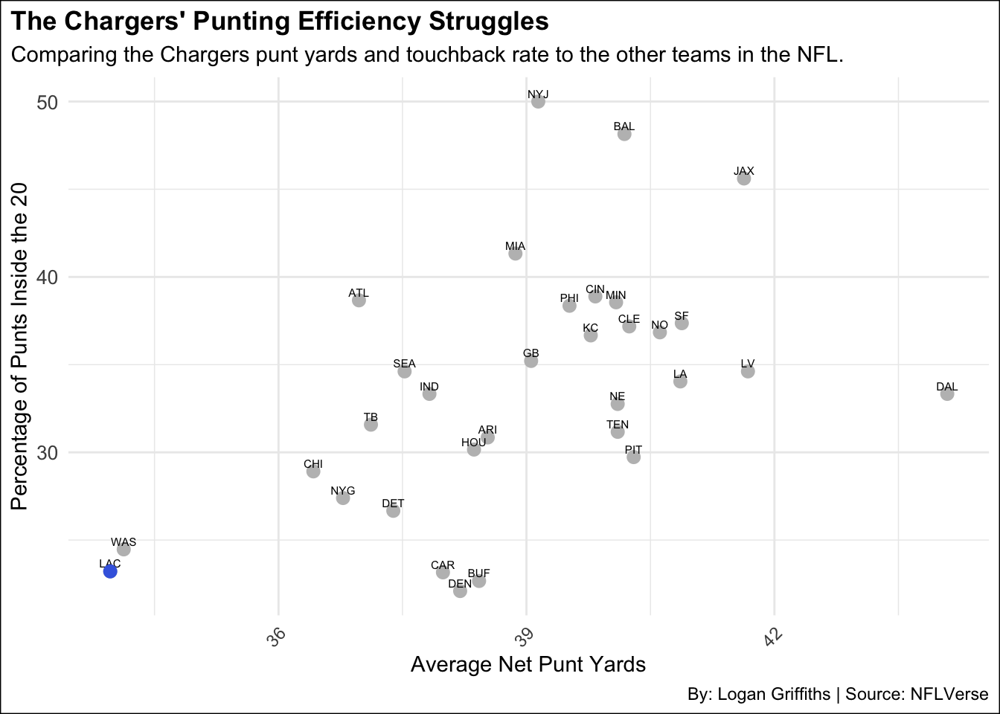

2010 Chargers Miss Playoffs Despite Being No. 1 in Offense and Deffense
Data Driven Articles
Author
Logan Griffiths
Published
November 5, 2024
The 2010 San Diego Chargers were one of the most puzzling teams in recent NFL history. Despite having the No. 1-ranked offense and defense, their season was cut short due to their weakness in special teams. As a result, the Chargers finished with a disappointing 9-7 record, barely missing the playoffs.
So how did the 2010 Chargers miss the playoffs?
First, let’s truly understand how much better they were in comparison to the rest of the league when it came to overall play on both sides of the ball.
Code
offensive_yards_per_play <- pbp |>filter(!is.na(posteam)) |>group_by(posteam) |>summarise(total_offensive_yards =sum(yards_gained, na.rm =TRUE),offensive_plays =n(),offensive_yards_per_play = total_offensive_yards / offensive_plays )defensive_yards_per_play <- pbp |>filter(!is.na(defteam)) |>group_by(defteam) |>summarise(total_defensive_yards_allowed =sum(yards_gained, na.rm =TRUE),defensive_plays =n(),defensive_yards_per_play = total_defensive_yards_allowed / defensive_plays ) yards_per_play_difference <- offensive_yards_per_play |>inner_join( defensive_yards_per_play, by =c("posteam"="defteam") ) |>mutate(yards_per_play_difference = offensive_yards_per_play - defensive_yards_per_play ) |>rename(team = posteam)LAC <- yards_per_play_difference |>filter(team =="LAC")ggplot() +geom_bar(data = yards_per_play_difference, aes(x =reorder(team, yards_per_play_difference), y = yards_per_play_difference), stat ="identity", fill ="gray") +geom_bar(data = LAC, aes(x =reorder(team, yards_per_play_difference), y = yards_per_play_difference), stat ="identity", fill ="royalblue") +labs(title ="Chargers Yards Per Play Differential Compared to Every NFL Team",subtitle ="The 2010 Chargers finished 1st in the NFL in yards per play differential.",x ="Team",y ="Yards per Play Difference",caption ="By: Logan Griffiths | Source : NFLVerse" )+theme_minimal() +theme(axis.text.x =element_text(angle =45, hjust =1),plot.title =element_text(face ="bold"),plot.title.position ="plot",plot.background =element_rect(fill ="white"),legend.position ="none" )

The 2010 San Diego Chargers dominated the league in yards per play differential, with a +1.44 yards per play difference between their offensive and defensive performance. The Chargers averaged 5.96 yards per offensive play (accumulating 6,343 yards on offense) while holding opponents to 4.52 yards per defensive play.
This differential was the largest in the NFL, significantly ahead of the second-place Pittsburgh Steelers, who posted a +1.09 differential. This Steelers team went on to play in the Super Bowl that year
So how can they be so good on offense and defense yet, miss the playoffs?
Code
pbp <- nflreadr::load_pbp(2010) |>filter(season_type =="REG")punting_data <- pbp |>filter(play_type =="punt")net_punt_yards <- punting_data |>group_by(posteam) |>summarise(avg_net_punt_yards =mean(kick_distance - return_yards, na.rm =TRUE) )punts_inside_20 <- punting_data |>group_by(posteam) |>summarise(pct_inside_20 =sum(punt_inside_twenty, na.rm =TRUE) /n() *100 )punt_touchbacks <- punting_data |>group_by(posteam) |>summarise(pct_touchbacks =sum(touchback, na.rm =TRUE) /n() *100)punting_efficiency <- net_punt_yards |>full_join(punts_inside_20, by ="posteam") |>full_join(punt_touchbacks, by ="posteam") |>rename(team = posteam)chargers_data <- punting_efficiency |>filter(team =="LAC")ggplot()+geom_point(data = punting_efficiency,aes(x = avg_net_punt_yards, y = pct_inside_20),color ="grey", size =3, shape =16 )+geom_text(data = punting_efficiency,aes(x = avg_net_punt_yards, y = pct_inside_20, label =team),size =2, vjust =-0.5, color ="black" )+geom_point(data = chargers_data,aes(x = avg_net_punt_yards, y = pct_inside_20),color ="royalblue", size =3, shape =16 ) +labs(title ="The 2010 Chargers Punting Efficiency Struggles",subtitle ="Comparing the Chargers punt yards and touchback rate to the other teams in the NFL.",x ="Average Net Punt Yards",y ="Percentage of Punts Inside the 20",caption ="By: Logan Griffiths | Source: NFLVerse" ) +theme_minimal() +theme(axis.text.x =element_text(angle =45, hjust =1),axis.text.y =element_text(size =10),plot.title =element_text(face ="bold"),plot.title.position ="plot",plot.background =element_rect(fill ="white"),legend.position ="none" )
The answer lies in their awful punting. The Chargers averaged just 33.96 net yards per punt ranking dead last in the NFL. On top of that they were 6 yards under the league average.
Not only were their average punting yards low, but their ability to pin their opponents behind the 20-yard line was equally poor, with only a 23.21%. Making matters worse, they led the league with a 16.07% touchback rate, consistently giving up opportunities to pin opponents deep in their own territory.
Code
#|message: false#|include: falsepunting_data <- X2010Punting |>mutate(punt_vs_return_diff = Yds - RetYds )chargers_data <- punting_data |>filter(Tm =="San Diego Chargers")ggplot()+geom_bar(data = punting_data,aes(x =reorder(Tm, punt_vs_return_diff), y = punt_vs_return_diff), stat ="identity", fill ="gray" ) +geom_bar(data = chargers_data, aes(x =reorder(Tm, punt_vs_return_diff), y = punt_vs_return_diff), stat ="identity", fill ="royalblue" ) +labs(title ="Difference Between Punt Yards vs Return Yards by Team (2010)",subtitle ="Highlighting San Diego Chargers' Punt Coverage Efficiency",x ="Team",y ="Difference in Yards (Punt Yards - Return Yards)",caption ="Data Source: NFLVerse" ) +theme_minimal() +theme(axis.text.x =element_text(angle =45, hjust =1),plot.title =element_text(face ="bold"),plot.title.position ="plot",plot.background =element_rect(fill ="white"),legend.position ="none" )